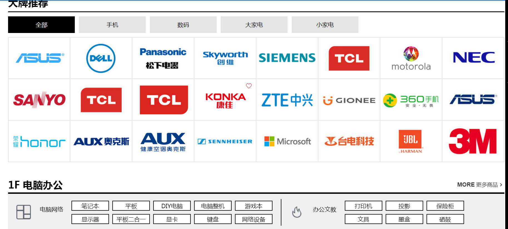
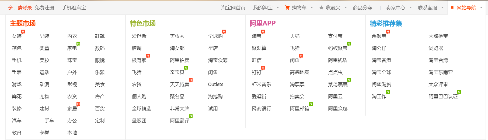
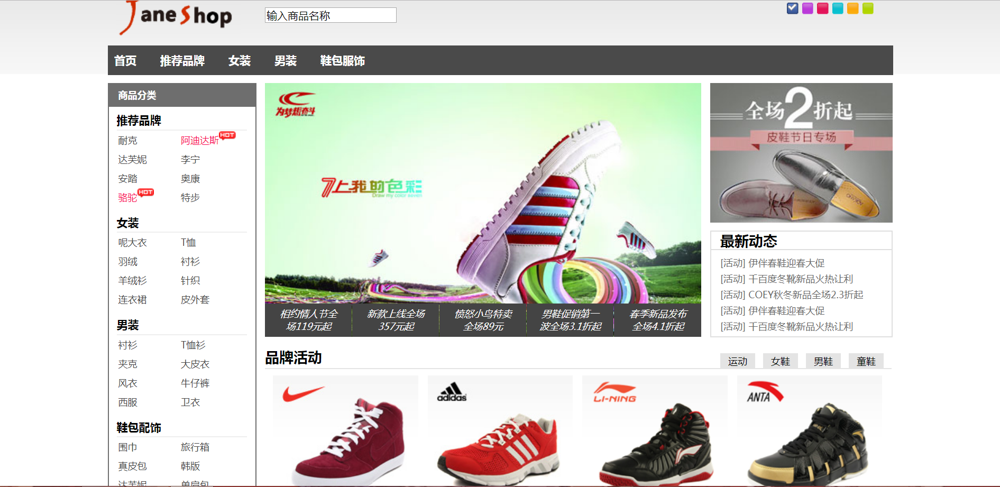
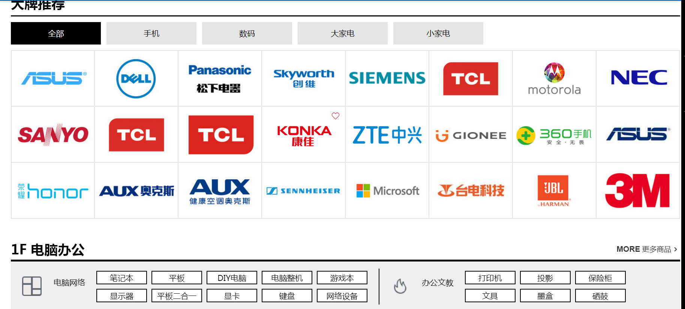
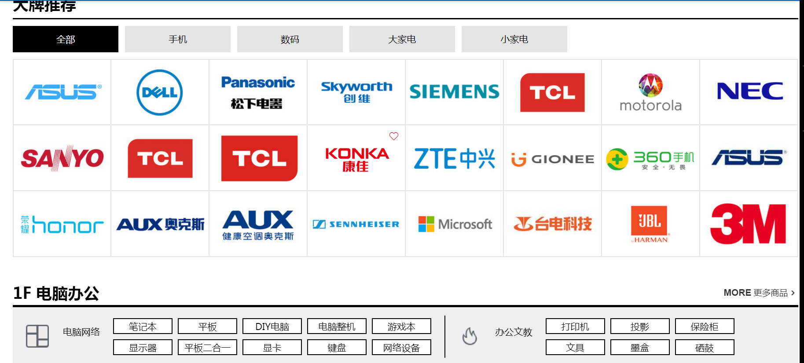
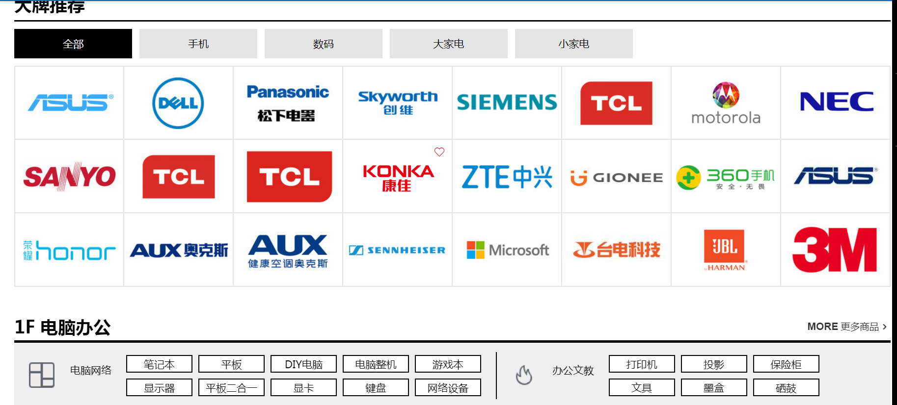
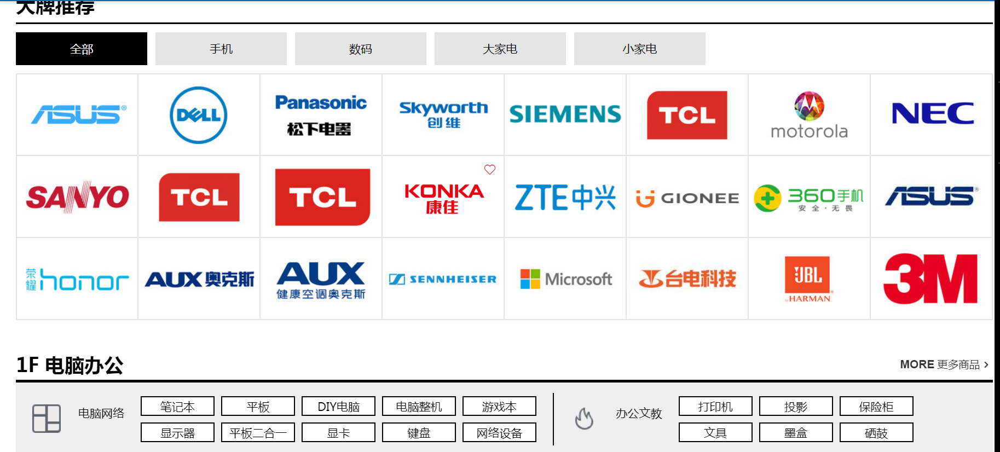

项目介绍
该项目是模仿天猫商城的首页去构建的页面，可以在里面把商品加入购物车，账单清算功能，登录功能，注册等功能。

该项目是模仿淘宝商城首页的页面，主要功能有登录功能，注册功能，找回密码功能，忘记密码功能，收藏物品，二级导航，购物车功能，返回顶部等功能。

该项目是模仿博雅网站的首页做的静态页面，没有任何功能，仅供欣赏。
该项目是鞋店的页面设计，主要功能有登录功能，注册功能，忘记密码功能，密码找回功能，更换背景颜色功能，放大镜等功能。

 


 
